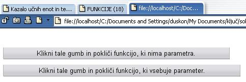
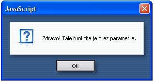
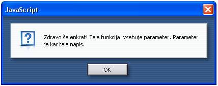

Praviènost je vrlina velikih osebnosti. (Platon)
 Slika 1 in 2: Funkcije v JavaScriptu - koda in videz spletne strani  Slika 3 in 4: Pojavni okni po klicu funkcij na slikah 1 in 2. 1. Izdelaj spletno stran, ki bo izgledala tako, kot kažejo slike 1 do 4. Datoteko poimenuj "18apriimek.html". Ne pozabi na konènico ".html". POZOR: Najprej NATANÈNO izdelaj vajo v tej uèni enoti in jo pokaži profesorju, nato zapiši odgovore na spodnja vprašanja. 2. V kodo primera v tej uèni enoti vstavi spodaj navedene komentarje na ustrezna mesta, ki jih ti komentarji pojasnjujejo. //Opis ali definicija funkcije s parametrom ali argumentom. //Klic funkcije brez parametra ali argumenta. //Klic funkcije s parametrom ali argumentom. //Opis ali definicija funkcije brez parametra ali argumenta. //Znaèka, ki oznaèuje v HTML zaèetek kode za obrazec. 3. Kodo primera v tej uèni enoti spremeni tako, da bo spletna stran vsebovala še en gumb, s katerim bomo poklicali še trejo funkcijo. Ta tretja funkcija naj ima kot parameter ali argument besedilo "Zdravo, jaz sem tvoja prva funkcija z argumentom. 1. Vprašanja za usmerjanje pozornosti in usvajanje novih besed: 1. Kdaj uporabimo funkcije JavaScripta? 2. Kje lahko funkcije Javacripta zapišemo? 3. Kje je najbolje, da je zapisana funkcija JavaScripta in zakaj? 4. Kako sta oznaèena zaèetek in konec funkcije? 5. Kaj so parametri funkcije? 2. Zapiši od ene do pet kljuènih besed, ki povzemajo vsebino te uène enote. 3. Vprašanja za razmislek in povezovanje z lastno izkušnjo: 1. Koliko funkcij vsebuje zgled na sliki 1? Zapiši imena teh funkcij. 2. Koliko parametrov vsebujejo funkcije v zgledu na sliki 1? 3. Kje so zapisane funkcije v zgledu na sliki 1: v glavi ali v telesu HTML dokumenta? 4. S katerim dogodkom poklièemo funkcije v zgledu na sliki 1? 5. V katerem delu HTML dokumenta poklièemo funkcije v zgledu na sliki 1? 6. Katero pojavno okno smo upotrabili v zgledu na sliki 1? 7. Kako je oznaèen parameter v eni od funkcij zgleda na sliki 1? 8. Zapiši vsebino parametra v eni od funkcij na sliki 1. 4. Domaèa naloga: 1. V zvezek prepiši misel, ki je zapisana na zaèetku uène enote z rdeèimi èrkami. Zabeleži nekaj lastnih misli, ki se ti utrnejo ob razmišljanju o njej. 2. Odgovori na vprašanja, na katere nisi uspel/a odgovoriti v šoli. 5. DODATNO DELO: 1. Izdelaj spletno stran, ki bo izgledala tako, kot kažejo slike 1 do 4. Spremeni pa sledeèe: napis na gumbu za klic prve funkcije naj bo tvoje ime, napis na gumbu za klic druge funkcije naj bo tvoj priimek, vsebina prvega opozorilnega okna naj bo današnji dan, vsebina drugega opozorilnega okna naj bo današnji datum. Datoteko poimenuj "18bpriimek.html". Ne pozabi na konènico ".html". |